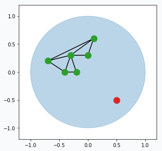
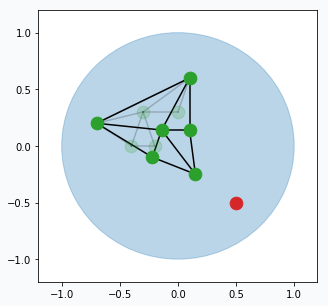

Making Art with Growing Neural Gas


Article shows how to generate unique styles from any image using Growing Neural Gas (GNG). In addition, it explains how this type of neural network works and what problems user might encounter while training it on different images.
Introduction
I’ve been trying to make that type of art style for quite some time. I applied SOFM to the images, but in most cases it was unsuccessful, mostly because SOFM requires predefined size and structure of the network. With such a requirement it’s difficult to construct tool that converts image to nice art style. Later, I’ve learned more about Growing Neural Gas and it helped to resolve main issues with SOFM. In this article, I want to explain how this type of art style can be generated from the image. At the end, I will cover some of the similar, but less successful application with growing neural gas for image processing that I’ve been trying to develop.
Image Processing Pipeline
Images are not very natural data structure for most of the machine learning algorithms and Growing Neural Gas (GNG) is not an exception. For this reason, we need to represent input image in format that will be understandable for the network. The right format for the GNG would be set of data points. In addition, these data points have to somehow resemble original image. In order to do it, we can binarize our image and after that, every pixel on the image will be either black or white. Each black pixel we can use as a data point and pixel’s position as a feature. In this way, we would be able to extract topological structure of the image and store it as set of data points.
Conversion from the color image to binary image requires three simple image processing steps that we will apply in sequential way.
We need to load our image first
# skimage version 0.13.1 from skimage import data, img_as_float astro = img_as_float(data.astronaut()) astro = astro[30:180, 150:300]
Convert color image to grayscale
from skimage import color astro_grey = color.rgb2grey(astro)

Apply gaussian blurring. It will allow us to reduce image detalization.
from skimage.filters import gaussian blured_astro_grey = gaussian(astro_grey, sigma=0.6)
Find binarization threshold and convert to the black color every pixel that below this threshold.
from skimage.filters import threshold_otsu # Increase threshold in order to add more # details to the binarized image thresh = threshold_otsu(astro_grey) + 0.1 binary_astro = astro_grey < thresh

In some cases, it might be important to adjust threshold in order to be able to capture all important details. In this example, I added 0.1 to the threshold.
And finally, from the binary image it’s easy to make data points.
data = []
for (x, y), value in np.ndenumerate(binary_astro):
if value == 1:
data.append([y, -x])
plt.scatter(*np.array(data).T)

In the image there are so many data points that it’s not clear if it’s really just a set of data points. But if you zoom in you will see that they really are.
We prepared our data and now we need to learn a bit more about GNG network.
Growing Neural Gas

Growing Neural Gas is very simple algorithm and it’s really easy to visualize it. From the animation above you can see how it learns shape of the data. Network, typically, starts with two random points and expands over the space.
In the original paper [1], algorithm looks a bit complicated with all variables and terminology, but in reality it’s quite simple. Simplified version of the algorithm might look like this:
Pick one data point at random (red data point).
Blue region represents large set of data points that occupy space in the form of a unit circle. And green points connected with black lines is our GNG network. Green points are neurons and black line visualize connection between two neurons.
Find two closest neurons (blue data points) to the sampled data point and connect these neurons with an edge.

Move closest neuron towards the data point. In addition, you can move neurons, that connected by the edge with closest neuron, towards the same point.
Each neuron has error that accumulates over time. For every updated neuron we have to increase error. Increase per each neuron equal to the distance (euclidean) from this neuron to the sampled data point. The further the neuron from the data point the larger the error.
Remove edges that haven’t been updated for a while (maybe after 50, 100 or 200 iterations, up to you). In case if there are any neurons that doesn’t have edges then we can remove them too.

From time to time (maybe every 100 or 200 iterations) we can find neuron that has largest accumulated error. For this neuron we can find it’s neighbour with the highest accumulated error. In the middle way between them we can create new neuron (blue data point) that will be automatically connected to these two neurons and original edge between them will be destroyed.

You can think about this step in the following way. Find neuron that typically makes most errors and add one more neuron near it. This new neuron will help the other neuron to reduce accumulated error. Reduction in error will mean that we better capture structure of our data.
Repeat all the steps many times.
There are a few small extensions to the algorithm has to be added in order to be able to call it Growing Neural Gas, but the most important principles are there.
Putting Everything Together
And now we ready to combine power of the image processing pipeline with Growing Neural Gas.
After running for one epoch we can already see some progress. Generated network resembles some distinctive features of our original image. At this point it’s pretty obvious that we don’t have enough neurons in the network in order to capture more details.

After 4 more iterations, image looks much closer to the original. You can notice that regions with large amount of data points have been developed properly, but small features like eyes, nose and mouth hasn’t been formed yet. We just have to wait more.

After 5 more iterations the eyebrows and eyes have better quality. Even hair has more complex shape.

On the 20th iteration network’s training has been stopped since we achieved desired quality of the image.
Reveal Issues with More Examples
I’ve been doing some experiments with other image as well, and there are a few problems that I’ve encountered.
There are two main components in the art style generation procedure, namely: image processing pipeline and GNG. Let’s look at problem with GNG network. It can be illustrated with the following image.

If you compare horses you will notice that horse on the right image looks a bit skinnier than the left one. It happened, because neurons in the GNG network are not able to rich edges of the image. After one training pass over the full dataset each neuron is getting pulled from many directions and over the training process it sattels somewhere in the middle, in order to be as close as possible to every sample that pulls it. The more neurons you add to the network the closer it will get to the edge.
Another problem related to the image binarization, the most difficult step in our image processing pipeline. It’s difficult, because each binarization method holds certain set of assumption that can easily fail for different images and there is no general way to do it. You don’t have such a difficulty with the network. It can give you pretty decent results for different images using the same configurations. The only thing that you typically need to control is the maximum number of neurons in the network. The more neuron you allow network to use the better quality of the image it produces.
In this article, I used global binarization method for image processing. This type of binarization generates single threshold for all pixels in the image, which can cause problems. Let’s look at the image below.

You can see that that there are some building in the background in the left image, but there is none in the right one. It’s hard to capture multiple object using single threshold, especially when they have different shades. For more complex cases you might try to use local thresholding methods.
Applying Similar Approach to Text
I’ve been also experimenting with text images. In the image below you can see the result.

It’s even possible to read text generated by the network. It’s also interesting that with slight modification to the algorithm you can count number of words in the image. We just need to add more blurring and after the training - count number of subgraphs in the network.

After many reruns I typically get number that very close to the right answer (44 words if you count “Region-based” as two words).
I also tried to train GNG network that captures trajectory of the signature. There are a few issues that I couldn’t overcome. In the image below you can clearly see some of these issues.
You will expect to see a signature as a continuous line and this property is hard to achieve using GNG. In the image above you can see a few places where network tries to cover some regions with small polygons and lines which looks very unnatural.
Final Words
Beautiful patterns generated from the images, probably, doesn’t reflect the real power of GNG network, but I think that the beauty behind algorithm shouldn’t be underappreciated only because it’s not useful for solving real world problems. There are not many machine learning algorithms that can be used for artistic application and it’s pretty cool when they work even though they weren’t designed for this purpose.
I had a lot of fun trying different ideas and I encourage you to try it as well. If you’re new to machine learning - it’s easy to start with GNG and if you’re an expert, I might try motivating you saying that it’s quite refreshing to work with neural networks that can be easily interpreted and analyzed.
Learn More
In case if you want to learn more about algorithms just like GNG then you can read about SOFM. As I said in the beginning of the article, it doesn’t work as nice as GNG for images, but you can write pretty cool text styles or generate beautiful patterns. And, it has some other interesting applications (even in deep learning).
Code
A few notebooks with code are available on github.
- Main notebook that generates all the images using GNG
- Growing Neural Gas animation notebook
- Notebook that generates step by step visualization images for the Growing Neural Gas algorithm
References
| [1] | A Growing Neural Gas Network Learns Topologies, Bernd Fritzke et al. https://papers.nips.cc/paper/893-a-growing-neural-gas-network-learns-topologies.pdf |
| [2] | Thresholding, tutorial from scikit-image library http://scikit-image.org/docs/dev/auto_examples/xx_applications/plot_thresholding.html |
| [3] | Thresholding (image processing), wikipedia article https://en.wikipedia.org/wiki/Thresholding_%28image_processing%29 |